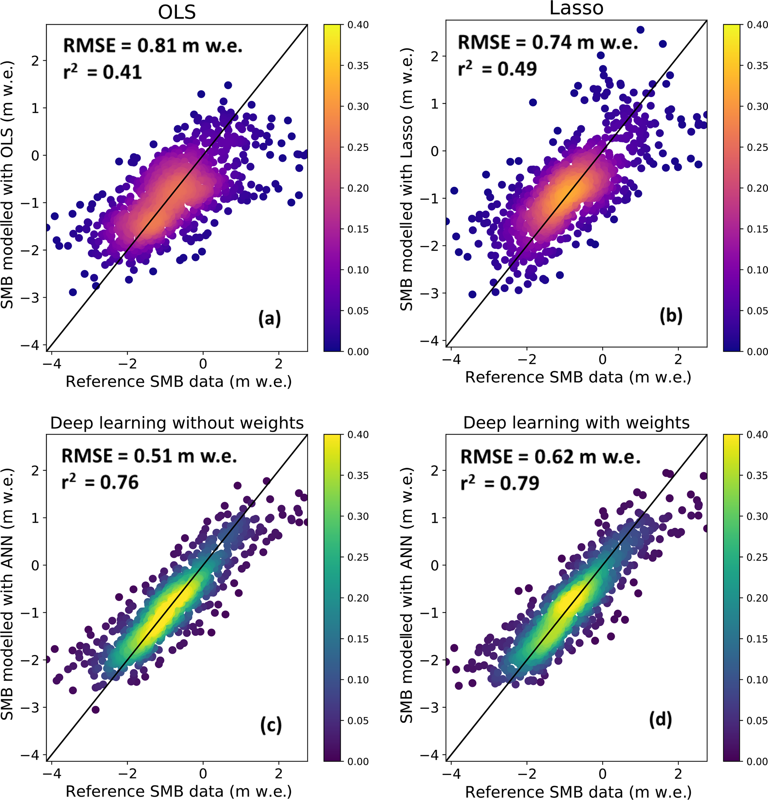
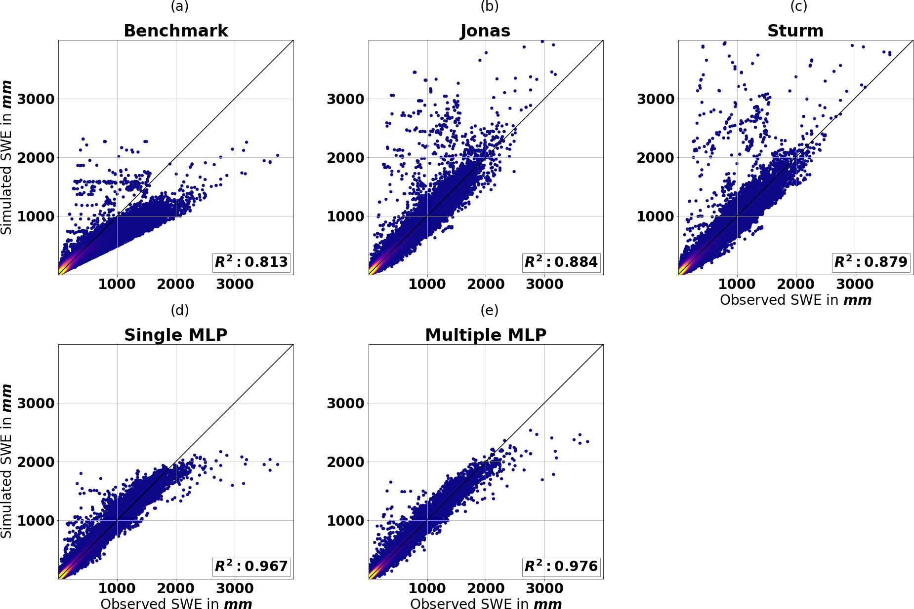

From a neuron to a network:
templates, logistic regression, layers
Session 21 · Mon Nov 16 and Wed Nov 18 · Book sections 4.0–4.2
One neuron: a weighted sum, then an activation

Score \(z = \sum_i w_i x_i + b\): each input times its weight, added up, plus a bias. The activation turns the score into the output.
The activation names the model

The same weighted sum gives three models you know. Only the last step differs.
Template matching: weights copied from one earthquake

🗂️ Catalog & compiled product 🪨 Solid Earth 📈 Seismology
Lecture 1: the waveform of each known earthquake, slid along ten years of records, found 1.81 million earthquakes in Southern California. At each position the detector computes a weighted sum, with the template as weights.
Our figure from the open QTM catalog of Ross, Trugman, Hauksson & Shearer (2019), Science 364, 767–771 (figscripts/qtm_hidden_earthquakes.py).
Fitted on labeled windows, the weights become the template

From 800 labeled windows the neuron recovers the event waveform: correlation 0.99. It detects as well as template matching, 99.75% of 400 test windows.
The 1958 rule: correct the weights after each mistake

Missed event: add the window to the weights. False alarm: subtract it. Here the line stops moving after 42 corrections.
On real events the rule never stops correcting

📍 In-situ sensor 🪨 Solid Earth 📈 Seismology
Explosion or earthquake, Pacific Northwest: the rule still corrects about 196 of 1,500 events per pass, and its test accuracy swings from 74.6% to 90.2%. Lowering the log-loss climbs steadily to 89.6%.
In the literature: glacier mass balance, French Alps

🖥️ Model & simulation 🧊 Cryosphere 🧊 Glaciology

Bolibar et al. (2020), The Cryosphere 14, 565–584, Figs. 6 and 3. doi:10.5194/tc-14-565-2020. CC BY 4.0.
On glaciers left out of training, the error falls from 0.74 m of water per year for the linear model (b) to 0.51 for the network (c).
In the literature: snow and ocean nutrients

📍 In-situ sensor 💧 Land water 💧 Hydrology & land-surface modeling
Ntokas et al. (2021), Hydrol. Earth Syst. Sci. 25, 3017–3040, Fig. 15. doi:10.5194/hess-25-3017-2021. CC BY 4.0.

📍 In-situ sensor 🌊 Ocean 🌊 Oceanography
Sauzède et al. (2017), Front. Mar. Sci. 4, 128, Fig. 2. doi:10.3389/fmars.2017.00128. CC BY.
Snow water from snow depth: one hidden layer, R² 0.97 against 0.88 for regression formulas. Ocean nitrate: two hidden layers, error 1.04 µmol/kg.
The loss: one number for the misfit

Each red bar is the misfit of one sample. The loss is the mean of the squared misfits; its square root here is 0.71 °C.
Training: predict, measure, step, repeat

From random weights the error falls from 3.6 °C to 0.32 °C in 20,000 steps, with a long plateau near 0.7 °C before the network finds the second thermocline.

A neuron loses an arrival that moves by 0.1 s

Monday’s neuron detects 99.5% of events at the trained arrival time, 47% when the arrival is 0.05 s later, and none from 0.08 s to 0.25 s. The template slid over every lag detects all of them.